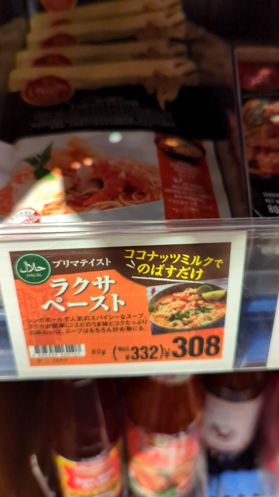

カルディでラクサペーストという商品を発見。 調べてみたら、美味くて有名らしい。
我が家では今ラクサがブームである。ラクサはシンガポールで有名な麺料理で、ラーメンのようなものらしい。ココナッツミルクをベースとしているが、調べてみたところラクサは地域性が強くこれといった定義がないようだ。 何故ラクサがブームになったかというと、日清のラクサカップヌードルにハマったためだ。
今のところラクサっぽいものはカップヌードルでしか食べたことがない。ロイヤルホストで今度ラクサのランチセットが始まるようだが、2288円と信じられないくらい高いので恐らく行くことはないだろう。そこまで出す料理ではない気がする。